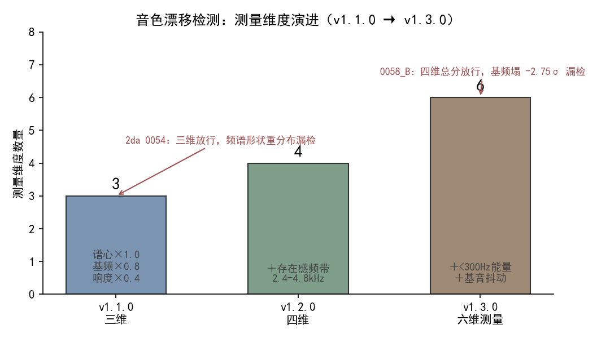
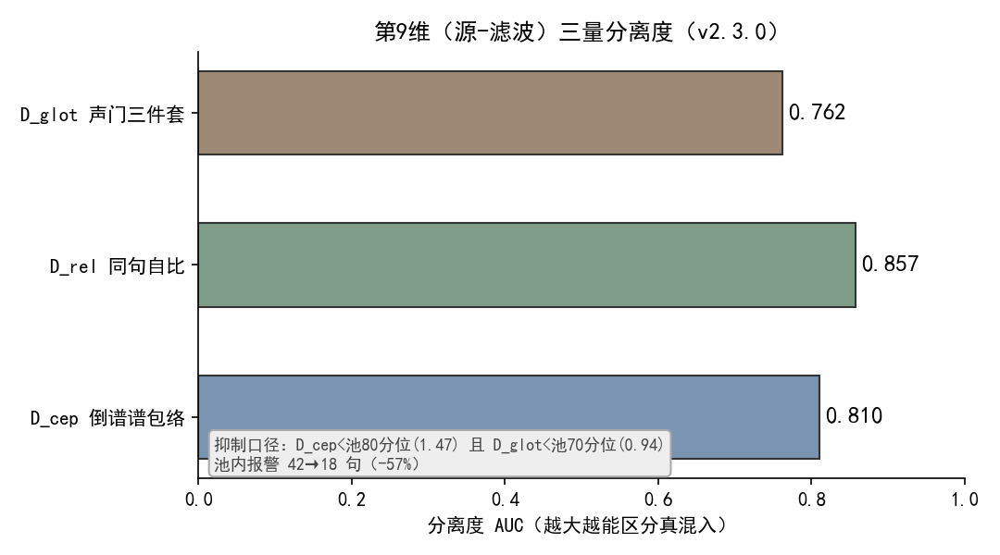

克隆音色靠一条参考音频加文本，确定性地派生种子做逐句抽样。问题在 v1.1.0 之前就存在：个别句子音色会悄悄漂移，而系统里没有一个判定者——漂移句直接进入成[1]。
实测 2c 期 253 句中，有 4 句（0093 / 0101 / 0135 / 0157）达到「近换人」的程度，既有looks_degenerate只判时长失控，音色维度没有任何检[1]。一句原角色的声音，被一两句「变了个嗓」的句子混在成片里，听者能听出不对，程序却指不出来。
把早期三维体检的放行记录拉出来看，放行了人耳判坏的候选——这是故障的表象。
2da 期 0054 句，三维分只有 2.76，远低于阈值 4.25，本应被放过。分频带剖面却显示：300–600 Hz 抬升、600–2400 Hz 掏空、2.4–4.8 kHz 存在感频带 +4.6σ（全期 102 句 B 中唯一过 +3σ）——频谱形状整体重分布，而谱心是加权平均位置，对形状搬移结构性失[2]。
更隐蔽的在四维验收下仍漏：第 3 期 0058_B 四维 3.94 < 4.25 判「已修复」，人耳复核却仍不是原角色——总分下降全部来自谱心与存在感变贴，基频反而从 213 Hz 塌到 208.5 Hz（−2.75σ）[3]。判分说「好了」，耳朵说「不是他」。
绕弯有过一条路：用一把加权总分兜住所有偏移。把谱心、基频、响度各量一个 z 值，按权重求和成一个分，超阈值就点名——指望这个分能同时捕捉所有方向的漂[1]。
这条路的盲区很快暴露。坏样本属于两个交互族：其一「基频下偏 × 基音抖动升高」（低音且不稳，病态嗓），其二「基频下偏 × 低频饱满」（单薄变饱满，音色身份漂移）[3]。加权总分把多维偏移摊薄，两个维度的联合偏移被其余贴合维度稀释后低于阈值；而既有维度全是单维统计量，根本不度量维度之间的关[3]。曾有人提过「单维上限」方案，覆盖的案例后来全部由身份下限接管，于是删[3]。
根因一句话：合验的第一代武器（加权总分）是单维统计量的线性组合，对两类盲区束手无策——维度间交互与频谱形状重分布。
谱心是加权平均位置，形状搬移时位置未必大动（2da 0054 即是）；加权求和又把联合偏移稀释（0058_B 即是）。两个盲区同源：检测器量的是「每个维度的位置」，不是「维度之间的关係」与「形状的整体搬移」。只要检测器还停在「逐维看位置」，它就接不住人耳听的「整段声音是不是同一个人」。
修复口径不是「再加一个维度」，而是把合验的武器从「逐维位置」换到「关系、形状、声源/声道分离」三层。演进四步，每一步都对应前面漏掉的一类盲区。
v1.1.0 三维：谱心×1.0 + 基频×0.8 + 响度×0.4 → 加权分 ≥ 4.25 点名
v1.2.0 四维：+ 存在感频带 2.4–4.8kHz 单边加权 → 补频谱形状盲区
v1.3.0 六维测量 + 三判据合验：+ <300Hz能量 + 抖动；暗淡子分 / 身份下限
v1.7.2 五族换芯：旧四维分(谱心单项截断) + 缺亮音 + 低频双向 + 声纹嵌入 + 音高偏移EMA
（另：女声源-滤波声门三件套原样保留）

图 1：测量维度数从三维长到六维，每一次扩展都对应一次漏检事故。红标＝加权分放行、人耳判坏的候选（2da 0054 / 0058_B）。数据[1][2][3]。
◦v1.2.0 四维：_timbre_features新增存在感频带（原始采样率上整段加 hanning 窗，取功率谱 2.4–4.8 kHz 能量占比；必须在降采样之前量，降到 16k 后 Nyquist 不足，带内形状会变）。_timbre_score追加0.5 × max(0, z存在感)单边加权——占比偏低属音色自然差异不点名，只计刺耳方[2]。
◦v1.3.0 六维测量 + 三判据合验：测量再扩<300 Hz 能量占比与基音抖动 jitter；新增暗淡子分 max(0, z基频下偏) + max(0, z谱心变暗) + 0.6 × max(0, z抖动)（阈值 4.9），专抓「基频下偏 × 抖动升高」病态嗓；新增身份下限（基频 ≤ −2.4σ，或基频 ≤ −2.0σ 且 <300 Hz 占比 ≥ +1.5σ），专抓「基频下偏 × 低频饱满」身份漂移[3]。三判据任一命中即点名，候选验收与检测共用同一把尺——重出候选必须三项全过才转[3]。
◦v1.7.2 五族换芯：_timbre_capture把判据扩成五族合验（见下表），并把谱心项改成max(0,·)单向截断，让「亮漂」不再抵消音高偏[4]。
| 族 | 量 | 口径 / 阈值 |
|---|---|---|
| ① 旧四维分 | 谱心×1.0 + 基频×0.8 + 响度×0.4 + 存在感单边 | 加权分 ≥ 4.25（谱心项改单向截断） |
| ② 缺亮音 | 谱心暗漂 | tts.timbre_cent_dark=1.5，单向 |
| ③ 低频双向 | <300 Hz 能量占比偏移 | tts.s300_band=1.5，双向 |
| ④ 声纹嵌入 | wavlm 余弦相似度 | tts.sv_guard=True，sim < tts.sv_sim=0.90 点名，时长门tts.sv_min_seconds=4.0 s |
| ⑤ 音高偏移 | 每期 o EMA | 冷启动取前 10 合格句中位、更新门 1.5 半音、硬钳位 ±2.5 半音 |
表 1：五族合验家族（v1.7.2）。女声三件套（声门，源-滤波）原样保留，不计入五族编[4][6]。
前五族仍在「逐维位置」层面工作。真正把声源与声道切开的是第 9 维（v2.3.0），它用源-滤波模型让检测对基频免疫。
第 9 维三量都建立在这个分离之上（podcast_maker/seg_incursion.py）：
| # | 量 | 算法 | 对 F0 免疫机制 |
|---|---|---|---|
| ① D_cep倒谱谱包络 | 帧平均幅度谱→log10→irfft取倒谱→只留 quefrency<2 ms→rfft回谱包络→13 个对数频点采样→逐点减自身均值（去增益与倾斜，只留共振峰形状）→与角色池逐系数 σ 归一求 RMS | 1/F0在 70~500 Hz 对应 2~14 ms，全被 lifter 切门外；形状量不含 F0 | |
| ② D_rel同句自比 | 被点名段包络 vs 同一句其它段中位包络（池 σ 归一） | 同上；另消句级通道/语速差异 | |
| ③ D_glot声门三件套 | 逐有声帧 CPP + HNR + H1\–H2\ → 段内中位 → 角色池 μ/σ 归一 | 量的是声源，不是声道也不是音高 |
表 2：第 9 维三量算法与对 F0 免疫机制（v2.3.0）[5]。
三个量的公式口径：CPP = 倒谱峰相对回归线高度（Hillenbrand 1994）；HNR = 10·log10(r/(1−r))归一化自相关峰（de Krom 1993 / Praat 口径）；H1*–H2* = F0、2F0 处幅度差再减掉倒谱包络在两点的落差（去声道影响）[6]。
S(f) = E(f) · H(f) → log|S| = log|E| + log|H| → lifter(低quefrency) 分离声道/声源
真实签名（两个独立来源件同套）：CPP 0.56/0.62（池 0.28）、HNR 9.08/8.91（池 5.17）、H1\–H2\ −4.32/−8.58（池 +1.06）→ 真混入；同人喊高三个量全贴池均值（抬音高不改声门开商）[6]。

图 2：D_cep / D_rel / D_glot 的分离度 AUC，越大越能区分真混入；抑制口径D_cep < 池80分位(1.47) 且 D_glot < 池70分位(0.94)，池内报警 42→18 句（−57%）。数据[6]。
第五族合验守的是「声音是不是同一个人」，但它依赖的标尺、试听与标定三件套本身也有同源问题——v2.10.0 把它们一并收束。
现象：① 全局唯一标尺previews/standard.wav文本与载体都取自首次生成的 A 角，A / B 试听只是同段音频快慢不同，听到的不是本人嗓[7]；② 试听分母用整段口径（k = 有效字 ÷ 含句间停顿的整段时长），而k_role是逐句口径（不含停顿），两端口径不一致，试听词速系统性偏快 7.87% [8]；③ 原标定参考取voice_profiles合成对、文本固定三句，与成片用的ref_base不是同一条嗓子，标定的语速对不上成[9]。
根因：标尺 / 试听 / 标定三处各自一套「参考与口径」，没有强制同源——标尺全局唯一不随角色走、试听分母与标定分母口径不一致、标定参考与成片参考分两套。三者任一不同源，人耳能听出的偏差就从这里[7][8][9]。
修法（三项）：
◦标尺 A / B 分离：tts_engine.ruler_files（:2174）按角色定文件名（standard_A.wav / standard_B.wav及各自 json），read_ruler（:2270）/standard_ruler（:2305）增role参数、落盘 json 增role；_sentence_boundary_fracs（:2215）由写死的三句占比改为按传入文本算；web_ui._std_ruler_text（:1028）读该角色ref.txt、读不到退回标定文本兜[7]。旧previews/standard.wav保留在盘、代码不再引用。
◦句口径 k_sentence + 试听按角色分管：standard_ruler落盘增列k_sentence（句子口径，构建时从刚写出的音频量得；旧尺子缺列时只读现量一次，量不出退回整段口径）；api_preview_standard（:1074）分母改用k_sentence，_get_std_ruler（:1050）/standard_payload（:73）的k_sentence由单值改为{"A": …，"B": …}，前端ratioNote按点位角色取对应分母——A / B 两条尺子文本与句间停顿各异，「整段 → 句口径」系数随之不同（实测旧尺 ×1.079、新 A ×1.112、新 B ×1.183），分母只能逐条实[8]。
◦标定改以 ref_base 为参考：tts_engine.voice_entity_ref（:974）定位音色本体、ensure_calib_ref（:1049）缓存命中即用、缺则现场生成，落点
四组证据，测量条件一并给出。
耳标样本三判据合验 15/15（v1.3.0）[3]：坏区 9 句全部命中——四维总分抓 3 句、暗淡子分抓 4 句、身份下限抓 3 句；放行区 6 句全部放过。这就是「从逐维位置换到关系/形状」后，人耳能听出的漂移终于被接住。
第 3 期全体 B 角以三判据重判（只读，未动音频）[3]：点名 0014_B（四维 4.18 + 暗淡 4.19 双放行，身份下偏 +2.53σ 抓获）与 0058_B（旧四维 3.93 放行，身份下偏 +2.75σ 抓获）；其余 135 句含旧修复 0205_B 全部放行，无误报。
第 9 维分离度（v2.3.0）[6]：D_cep AUC 0.810、D_rel 0.857、D_glot 0.762；抑制口径下池内报警 42→18 句（−57%）。顺带两件：第 8 维线定错（固定线 3.2≈中位数→报警 53%；改池 90 分位 z=5.73/4.27→报警 7%）；倍频嫌疑证伪（改用谐波梳命中率，hit(f0/2)中位 0.50，≥0.83 段 0/74→真基频非倍频）。
单测计数：全量 v1.1.0 1294 → v1.2.0 1298 → v1.3.0 1311 → v1.7.2 1391（判据换芯前 1359）[1][2][3][4]。第 9 维新增tests/test_timbre_guard.py::SegIncursionVetoTest（8 条：两道否决零误伤钉、否决压不掉真混入的守卫、flag() veto 关键字兼容、calibrate 句数门）与SegIncursionDimsTest（合成 150 Hz 谐波 wav 钉段级行结构与 f0 读数）[6]。
标尺 / 试听 / 标定同源（v2.10.0）：
◦tests/test_preview_standard.py::TestStandardPayload（:301）4 条：尺子在场时k与k_sentence一并下发且不等、旧尺子缺列如实退回整段口径、尺子不在场不含k_sentence、读尺子抛异常降级只报k [8]。
◦tests/test_preview_standard.py::TestRulerCarrierPinned（:494）2 条：构建路径烙设备与后端、只读路径不探测服[7]。
◦tests/test_preview_standard.py另增 5 条：A / B 两尺子各占文件名、写入互不覆盖、只读各取自己那条、文本随角色落到各自 json、_sentence_boundary_fracs按传入文本[7]。
◦tests/test_tts_engine.py::TestVoiceEntityRef（:832）4 条、TestCalibRef（:867）4 条；TestScriptPins增 2 条（ref_base候选挑选唯一实现、命令行留出脱离项目那一路）[9]。
◦尺子 A / B 分离与标定改参考后复跑全量 1601 通过（skipped=1）；标定脱离项目后全量 1612 通过（skipped=1）[7][9]。
音色漂移检测不是「多加维度」，而是把合验的武器从「每个维度的位置」换成「维度之间的关系、形状的整体搬移、以及声源与声道的分离」。维度从三维长到五族合验，第 9 维再切开源-滤波——合验才接住了人耳能听出的漂移。
v2.10.0 把守着「声音是不是同一个人」的标尺、试听与标定三件套也收了同源——标尺按角色各念各的ref.txt、试听分母逐条实量到句口径、标定直接以ref_base本尊为参考，让「检测的同源性」从合验判据一路贯穿到测量与标定的源头。
| 编号 | 引用 | 出处 |
|---|---|---|
| [1] | v1.1.0 新增音色体检：逐句基频中位/谱心/响度三维；加权分 谱心×1.0+基频×0.8+响度×0.4 ≥4.25；六句人耳定标（0157=6.17/0093=5.15/0135=4.68/0101=4.32 报警，0169=4.20/0233=3.88 放过）；2c 期 253 句 4 句点名；全量 1294 项 | podcast-maker · CHANGELOG.md · v1.1.0 · 条目「新增音色体检（timbre guard）」 podcast_maker/tts_engine.py:_timbre_features(:1199)/_timbre_score(:1291) |
| [2] | v1.2.0 四维：+ 存在感频带 2.4–4.8kHz（降采样前量）；_timbre_score追加 0.5×max(0,z存在感) 单边；2da 0054 三维放行漏检；全量 1298 项 | podcast-maker · CHANGELOG.md · v1.2.0 · 条目「判定分由三维扩为四维」 |
| [3] | v1.3.0 六维测量（+<300Hz能量 +jitter）+ 三判据合验（暗淡子分≥4.9 / 身份下限）；四维验收放行人耳判坏 0058_B（基频塌 -2.75σ）；15 耳标 15/15；第3期 B 角重判抓获 0014_B/0058_B；全量 1311 项 | podcast-maker · CHANGELOG.md · v1.3.0 · 条目「三判据合验」 podcast_maker/tts_engine.py:_timbre_score(:1291) |
| [4] | v1.7.2 五族合验换芯（旧四维分谱心截断 / 缺亮音 / 低频双向 / 声纹嵌入 / 音高偏移EMA）；女声三件套原样保留；候选验收 fail-closed；全量 1391 项 | podcast-maker · CHANGELOG.md · v1.7.2 · 条目「音色体检判据换芯（五族合验）」 podcast_maker/tts_engine.py:_timbre_capture |
| [5] | 源-滤波模型（Fant 1960）：S(f)=E(f)·H(f)→log|S|=log|E|+log|H|，低通 liftering 分离声道包络/基频周期；第9维 D_cep/D_rel/D_glot 算法与对 F0 免疫机制（1/F0 在 2~14ms 全被切门外） | podcast-maker · CHANGELOG.md · v2.3.0 · 第9维条目 podcast_maker/seg_incursion.py（项目实证，原理 L1 文献） |
| [6] | 三量公式口径（CPP/HNR/H1\–H2\）；真实签名（CPP 0.56/0.62、HNR 9.08/8.91、H1\–H2\ -4.32/-8.58）；分离度 AUC（D_cep 0.810/D_rel 0.857/D_glot 0.762）；抑制口径 D_cep<1.47 且 D_glot<0.94，报警 42→18 句(-57%)；第8维线定错 53%→7%；倍频证伪 | podcast-maker · CHANGELOG.md · v2.3.0 · 第9维条目（实测 L1 代码） podcast_maker/seg_incursion.py:calibrate(:667)；tests/test_timbre_guard.py::SegIncursionVetoTest |
| [7] | v2.10.0 标准尺子 A/B 分离：ruler_files 按角色定名、read_ruler/standard_ruler 增 role；_sentence_boundary_fracs 按传入文本算；_std_ruler_text 读角色 ref.txt；旧 standard.wav 保留不引用；全量 1601 通过 | podcast-maker · CHANGELOG.md · v2.10.0 · 条目「标准尺子 A / B 分离，各念各自 ref.txt」 podcast_maker/tts_engine.py:ruler_files(:2174)/read_ruler(:2270)/standard_ruler(:2305) |
|---|---|---|
| [8] | v2.10.0 试听分母口径对齐：k_sentence 句子口径落盘、api_preview_standard 分母改用 k_sentence、standard_payload 按角色下发；旧口径偏快 7.87%；全量 1565 / 1601 | podcast-maker · CHANGELOG.md · v2.10.0 · 条目「试听分母口径与分子不对齐，词速系统性偏快 7.87%」 podcast_maker/tts_engine.py:standard_ruler(:2305)；podcast_maker/web_ui.py:api_preview_standard(:1074) |
| [9] | v2.10.0 标定改以 ref_base 为参考：voice_entity_ref/ensure_calib_ref 本体定位 + 缓存；api_voice_calibrate 取 base_wav 本尊 + ref.txt 逐句；_gen_baseref 候选挑选唯一实现、build_from 脱离项目；全量 1612 通过 | podcast-maker · CHANGELOG.md · v2.10.0 · 条目「标定改以 ref_base 为参考、念角色自己的 ref.txt」「ref_base 的候选挑选收敛为唯一实现」「标定脱离项目」 podcast_maker/tts_engine.py:voice_entity_ref(:974)/ensure_calib_ref(:1049)；tts_service/make_base_ref.py:_gen_baseref(:210) |
◦同书 #19《声门三件套与傅里叶域分段》：本文第 9 维只讲原理与对 F0 免疫机制；第 9 维的段级否决接线、第 8 维线定错、倍频证伪的完整拆机在 #19。
◦同书 #13《本地 TTS 显存管理》：声纹嵌入引擎（SVEngine，v1.7.2 第④族）的显存门槛与 Job 对象绑定纪律，与本文第④族判据共用同一套本地语音服务纪律。
最后更新：2026-10-10（已带图：图1 维度演进 + 图2 第9维 AUC；含五族合验表 + 第9维三量表 + 源-滤波公式块 + 5.4 标尺/试听/标定同源收束；四检：真实性 PASS / 底层逻辑 PASS / 空推论 PASS / 循环论证 PASS）